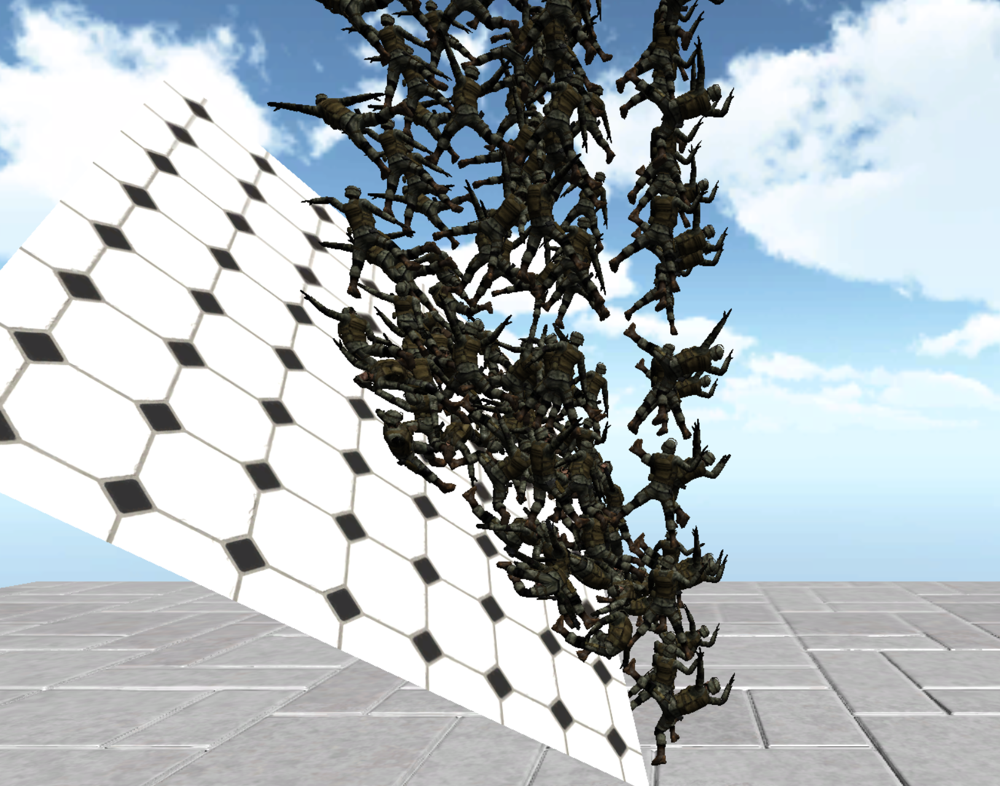

	<!doctype html>
	<!--[if !IE]>
	<html class="no-js non-ie" lang="ja"> <![endif]-->
	<!--[if IE 7 ]>
	<html class="no-js ie7" lang="ja"> <![endif]-->
	<!--[if IE 8 ]>
	<html class="no-js ie8" lang="ja"> <![endif]-->
	<!--[if IE 9 ]>
	<html class="no-js ie9" lang="ja"> <![endif]-->
	<!--[if gt IE 9]><!-->
<html class="no-js" lang="ja"> <!--<![endif]-->
	<head>

		<meta charset="UTF-8"/>
		<meta name="viewport" content="width=device-width, initial-scale=1.0">

		<title>Psychic ＶＲラボの殴り書き - Part 2</title>

		<link rel="profile" href="http://gmpg.org/xfn/11"/>
		<link rel="pingback" href="../../xmlrpc.php"/>

		
<!-- All in One SEO Pack 2.2.6.2 by Michael Torbert of Semper Fi Web Design[481,488] -->
<link rel='prev' href='../../index.html' />
<link rel='next' href='../3/index.html' />

<link rel="canonical" href="index.html" />
<!-- /all in one seo pack -->
<link rel="alternate" type="application/rss+xml" title="Psychic VRラボの殴り書き &raquo; フィード" href="../../feed/index.html" />
<link rel="alternate" type="application/rss+xml" title="Psychic VRラボの殴り書き &raquo; コメントフィード" href="../../comments/feed/index.html" />
<link rel='stylesheet' id='crayon-css'  href='../../wp-content/plugins/crayon-syntax-highlighter/css/min/crayon.min-ver=2.7.1.css' type='text/css' media='all' />
<link rel='stylesheet' id='crayon-theme-classic-css'  href='../../wp-content/plugins/crayon-syntax-highlighter/themes/classic/classic-ver=2.7.1.css' type='text/css' media='all' />
<link rel='stylesheet' id='crayon-font-monaco-css'  href='../../wp-content/plugins/crayon-syntax-highlighter/fonts/monaco-ver=2.7.1.css' type='text/css' media='all' />
<link rel='stylesheet' id='addtofeedly-style-css'  href='../../wp-content/plugins/add-to-feedly/style-ver=4.1.5.css' type='text/css' media='all' />
<link rel='stylesheet' id='contact-form-7-css'  href='../../wp-content/plugins/contact-form-7/includes/css/styles-ver=4.1.2.css' type='text/css' media='all' />
<link rel='stylesheet' id='responsive-style-css'  href='../../wp-content/themes/responsive/core/css/style-ver=1.9.7.6.css' type='text/css' media='all' />
<link rel='stylesheet' id='responsive-media-queries-css'  href='../../wp-content/themes/responsive/core/css/responsive-ver=1.9.7.6.css' type='text/css' media='all' />
<link rel='stylesheet' id='wptt_front-css'  href='../../wp-content/plugins/wp-twitter-feeds/css/admin_style.min-ver=4.1.5.css' type='text/css' media='all' />
<link rel='stylesheet' id='jetpack_css-css'  href='../../wp-content/plugins/jetpack/css/jetpack-ver=3.5.3.css' type='text/css' media='all' />
<!-- This site uses the Google Analytics by Yoast plugin v5.4.2 - Universal disabled - https://yoast.com/wordpress/plugins/google-analytics/ -->
<script type="text/javascript">

	var _gaq = _gaq || [];
	_gaq.push(['_setAccount', 'UA-63550884-1']);
	_gaq.push(['_gat._forceSSL']);
	_gaq.push(['_trackPageview']);

	(function () {
		var ga = document.createElement('script');
		ga.type = 'text/javascript';
		ga.async = true;
		ga.src = ('https:' == document.location.protocol ? 'https://ssl' : 'http://www') + '.google-analytics.com/ga.js';
		var s = document.getElementsByTagName('script')[0];
		s.parentNode.insertBefore(ga, s);
	})();

</script>
<!-- / Google Analytics by Yoast -->
<script type='text/javascript' src='../../wp-includes/js/jquery/jquery-ver=1.11.1.js'></script>
<script type='text/javascript' src='../../wp-includes/js/jquery/jquery-migrate.min-ver=1.2.1.js'></script>
<script type='text/javascript'>
/* <![CDATA[ */
var CrayonSyntaxSettings = {"version":"2.7.1","is_admin":"0","ajaxurl":"http:\/\/psychic-vr-lab.com\/blog\/wp-admin\/admin-ajax.php","prefix":"crayon-","setting":"crayon-setting","selected":"crayon-setting-selected","changed":"crayon-setting-changed","special":"crayon-setting-special","orig_value":"data-orig-value","debug":""};
var CrayonSyntaxStrings = {"copy":"\u8cbc\u308a\u4ed8\u3051\u306b\u30b3\u30d4\u30fc\u3001%s\u306b%s\u3092\u62bc\u3057\u3066\u3001","minimize":"Click To Expand Code"};
/* ]]> */
</script>
<script type='text/javascript' src='../../wp-content/plugins/crayon-syntax-highlighter/js/min/crayon.min-ver=2.7.1.js'></script>
<script type='text/javascript' src='../../wp-content/plugins/add-to-feedly/js/jquery-1.10.2.min-ver=4.1.5.js'></script>
<script type='text/javascript' src='../../wp-content/plugins/add-to-feedly/js/scripts-ver=4.1.5.js'></script>
<script type='text/javascript' src='../../wp-content/themes/responsive/core/js/responsive-modernizr.min-ver=2.6.1.js'></script>
<link rel="EditURI" type="application/rsd+xml" title="RSD" href="../../xmlrpc.php-rsd.xml" />
<link rel="wlwmanifest" type="application/wlwmanifest+xml" href="../../wp-includes/wlwmanifest.xml" /> 
<meta name="generator" content="WordPress 4.1.5" />
<link rel='shortlink' href='http://wp.me/5hcgk' />
<script type="text/javascript">
	window._wp_rp_static_base_url = 'https://wprp.zemanta.com/static/';
	window._wp_rp_wp_ajax_url = "http://psychic-vr-lab.com/blog/wp-admin/admin-ajax.php";
	window._wp_rp_plugin_version = '3.5.4';
	window._wp_rp_post_id = '289';
	window._wp_rp_num_rel_posts = '6';
	window._wp_rp_thumbnails = true;
	window._wp_rp_post_title = 'Unity%E3%81%8B%E3%82%89%EF%BC%91%E3%83%95%E3%83%AC%E3%83%BC%E3%83%A0%E3%81%94%E3%81%A8%E5%87%BA%E5%8A%9B%E3%81%97%E9%AB%98%E7%94%BB%E8%B3%AA%E5%8B%95%E7%94%BB%E3%82%92%E4%BD%9C%E6%88%90%E3%81%99%E3%82%8B%E6%96%B9%E6%B3%95';
	window._wp_rp_post_tags = ['unity', 'movi', 'candi', 'qa', 'playa', 'sky', 'border', 'auto', 'unit', 'project', 'window', 'set', '30', 'rock', 'star', 'uniti'];
	window._wp_rp_promoted_content = true;
</script>
<script type="text/javascript" src="https://wprp.zemanta.com/static/js/loader.js?version=3.5.4" async></script>
<link rel="stylesheet" href="../../wp-content/plugins/wordpress-23-related-posts-plugin/static/themes/vertical-m-version=3.5.4.css" />
<style type='text/css'>img#wpstats{display:none}</style><!-- We need this for debugging -->
<!-- Responsive 1.9.7.6 -->
	</head>

<body class="home blog paged paged-2">

<div id="container" class="hfeed">

	<div class="skip-container cf">
		<a class="skip-link screen-reader-text focusable" href="index.html#content">&darr; Skip to Main Content</a>
	</div><!-- .skip-container -->
	<div id="header">

		
		
		
		
		
			<div id="logo">
				<span class="site-name"><a href="../../index.html" title="Psychic VRラボの殴り書き" rel="home">Psychic VRラボの殴り書き</a></span>
				<span class="site-description">Unity, Oculus rift, Leap motion, Kinect技術メモ</span>
			</div><!-- end of #logo -->

		
				<div class="main-nav"><ul class="menu"><li ><a href="../../index.html">ホーム</a></li></ul>
</div>
		
		
	</div><!-- end of #header -->

	<div id="wrapper" class="clearfix">

	<div id="content-blog" class="grid col-620">

		<!-- Blog page title -->
		
		<span class="breadcrumb" typeof="v:Breadcrumb"><!-- Breadcrumb NavXT 5.2.1 -->
<span typeof="v:Breadcrumb"><span property="v:title">Psychic VRラボの殴り書き</span></span></span>
		
			
								<div id="post-289" class="post-289 post type-post status-publish format-standard hentry category-unity">
					
					
	<h2 class="entry-title post-title"><a href="../../unity/unity%E3%81%8B%E3%82%89%EF%BC%91%E3%83%95%E3%83%AC%E3%83%BC%E3%83%A0%E3%81%94%E3%81%A8%E5%87%BA%E5%8A%9B%E3%81%97%E9%AB%98%E7%94%BB%E8%B3%AA%E5%8B%95%E7%94%BB%E3%82%92%E4%BD%9C%E6%88%90%E3%81%99/index.html" rel="bookmark">Unityから１フレームごと出力し高画質動画を作成する方法</a></h2>

<div class="post-meta">
	<span class="meta-prep meta-prep-author posted">投稿日: </span><a href="../../unity/unity%E3%81%8B%E3%82%89%EF%BC%91%E3%83%95%E3%83%AC%E3%83%BC%E3%83%A0%E3%81%94%E3%81%A8%E5%87%BA%E5%8A%9B%E3%81%97%E9%AB%98%E7%94%BB%E8%B3%AA%E5%8B%95%E7%94%BB%E3%82%92%E4%BD%9C%E6%88%90%E3%81%99/index.html" title="Unityから１フレームごと出力し高画質動画を作成する方法" rel="bookmark"><time class="timestamp updated" datetime="2014-12-26T09:54:27+00:00">2014年12月26日</time></a><span class="byline"> 作成者: </span><span class="author vcard"><a class="url fn n" href="../../author/from2001/index.html" title="from2001 の投稿をすべて表示">from2001</a></span>
			<span class="comments-link">
		<span class="mdash">&mdash;</span>
			<a href="../../unity/unity%E3%81%8B%E3%82%89%EF%BC%91%E3%83%95%E3%83%AC%E3%83%BC%E3%83%A0%E3%81%94%E3%81%A8%E5%87%BA%E5%8A%9B%E3%81%97%E9%AB%98%E7%94%BB%E8%B3%AA%E5%8B%95%E7%94%BB%E3%82%92%E4%BD%9C%E6%88%90%E3%81%99/index.html#respond" title="Comment on Unityから１フレームごと出力し高画質動画を作成する方法">コメントはありません &darr;</a>		</span>
	</div><!-- end of .post-meta -->

					<div class="post-entry">
												<p>こんばんはfrom2001vrです。</p>
<p>UnityのGameViewをオフライン(リアルタイム描画ではない)にて画面をキャプチャして動画を作成する方法です。遅いPCにて高画質の動画を作成することも可能です。</p>
<p>ユニティちゃんライブCandy Rock Starを4K解像度で録画してみました。</p>
<h2><a href="https://www.assetstore.unity3d.com/en/#!/content/9154" target="_blank">uRecord</a></h2>
<p><a href="../../wp-content/uploads/2014/12/2014-12-23-03.31.11-pm.png"><noscript></noscript></a></p>
<p>いくつかのアッセとを試してみて今回一番使いやすかったuRecordを利用して説明します。</p>
<p> <a href="../../unity/unity%E3%81%8B%E3%82%89%EF%BC%91%E3%83%95%E3%83%AC%E3%83%BC%E3%83%A0%E3%81%94%E3%81%A8%E5%87%BA%E5%8A%9B%E3%81%97%E9%AB%98%E7%94%BB%E8%B3%AA%E5%8B%95%E7%94%BB%E3%82%92%E4%BD%9C%E6%88%90%E3%81%99/index.html#more-289" class="more-link">続きを読む &#8250;</a></p>
											</div>
					<!-- end of .post-entry -->

					

	<div class="post-data">
		カテゴリー: <a href="../../category/unity/index.html">Unity</a>			</div><!-- end of .post-data -->


<div class="post-edit"></div>
									</div><!-- end of #post-289 -->
				
			
								<div id="post-299" class="post-299 post type-post status-publish format-standard hentry category-14">
					
					
	<h2 class="entry-title post-title"><a href="../../%E3%82%B5%E3%83%B3%E3%83%97%E3%83%AB/4k30fps%E5%8B%95%E7%94%BB%EF%BC%88%E3%83%A6%E3%83%8B%E3%83%86%E3%82%A3%E3%81%A1%E3%82%83%E3%82%93-candy-rock-star-%E3%83%A9%E3%82%A4%E3%83%96%E3%82%B9%E3%83%86%E3%83%BC%E3%82%B8%EF%BC%89/index.html" rel="bookmark">4k30fps動画（ユニティちゃん Candy Rock Star ライブステージ）</a></h2>

<div class="post-meta">
	<span class="meta-prep meta-prep-author posted">投稿日: </span><a href="../../%E3%82%B5%E3%83%B3%E3%83%97%E3%83%AB/4k30fps%E5%8B%95%E7%94%BB%EF%BC%88%E3%83%A6%E3%83%8B%E3%83%86%E3%82%A3%E3%81%A1%E3%82%83%E3%82%93-candy-rock-star-%E3%83%A9%E3%82%A4%E3%83%96%E3%82%B9%E3%83%86%E3%83%BC%E3%82%B8%EF%BC%89/index.html" title="4k30fps動画（ユニティちゃん Candy Rock Star ライブステージ）" rel="bookmark"><time class="timestamp updated" datetime="2014-12-25T13:44:36+00:00">2014年12月25日</time></a><span class="byline"> 作成者: </span><span class="author vcard"><a class="url fn n" href="../../author/from2001/index.html" title="from2001 の投稿をすべて表示">from2001</a></span>
			<span class="comments-link">
		<span class="mdash">&mdash;</span>
			<a href="../../%E3%82%B5%E3%83%B3%E3%83%97%E3%83%AB/4k30fps%E5%8B%95%E7%94%BB%EF%BC%88%E3%83%A6%E3%83%8B%E3%83%86%E3%82%A3%E3%81%A1%E3%82%83%E3%82%93-candy-rock-star-%E3%83%A9%E3%82%A4%E3%83%96%E3%82%B9%E3%83%86%E3%83%BC%E3%82%B8%EF%BC%89/index.html#respond" title="Comment on 4k30fps動画（ユニティちゃん Candy Rock Star ライブステージ）">コメントはありません &darr;</a>		</span>
	</div><!-- end of .post-meta -->

					<div class="post-entry">
												<p>著作権を気にせず自由に使えるいい感じの無料4K動画サンプルが見つからなかったので、UnityちゃんCandy Rock Star ライブステージを4K録画してみました。</p>
<p>高画質AVIファイルを下記からダウンロードできるようにしました。</p>
<p>・ユニティちゃん Candy Rock Star ライブステージ4k動画<br />
(3840x2160px, 30fps, AVI形式)<br />
<a href="https://www.dropbox.com/s/zkj95vac2vfxuw0/CandyRockStar_4k30fps.avi?dl=1">CandyRockStar_4k30fps.avi</a> (3.32GB)</p>
<p>この動画の作成方法はこちら<br />
<a href="../../unity/unity%E3%81%8B%E3%82%89%EF%BC%91%E3%83%95%E3%83%AC%E3%83%BC%E3%83%A0%E3%81%94%E3%81%A8%E5%87%BA%E5%8A%9B%E3%81%97%E9%AB%98%E7%94%BB%E8%B3%AA%E5%8B%95%E7%94%BB%E3%82%92%E4%BD%9C%E6%88%90%E3%81%99/index.html" target="_blank">Unityから１フレームごと出力し高画質動画を作成する方法 &#8211; VRラボの殴り書き</a></p>
<p>↓クリックすると4K動画の1フレームが表示されます。縦3840横2160ピクセルの画像は1フレームでも6.5Mあります。</p>
<p><a href="../../wp-content/uploads/2014/12/new_00002453Image.png" target="_blank"><noscript></noscript></a></p>
<div><noscript></noscript></p>
<p style="text-align: center;">このコンテンツは、『<a href="http://unity-chan.com/contents/license_jp/" target="_blank">ユニティちゃんライセンス</a>』で提供されています</p>
</div>
											</div>
					<!-- end of .post-entry -->

					

	<div class="post-data">
		カテゴリー: <a href="../../category/%E3%82%B5%E3%83%B3%E3%83%97%E3%83%AB/index.html">サンプル</a>			</div><!-- end of .post-data -->


<div class="post-edit"></div>
									</div><!-- end of #post-299 -->
				
			
								<div id="post-284" class="post-284 post type-post status-publish format-standard hentry category-6">
					
					
	<h2 class="entry-title post-title"><a href="../../%E3%81%9D%E3%81%AE%E4%BB%96/%E6%8E%A5%E7%B6%9A%E3%83%A2%E3%83%8B%E3%82%BF%E3%82%88%E3%82%8A%E9%AB%98%E8%A7%A3%E5%83%8F%E5%BA%A6%E3%81%A7pc%E3%82%92%E5%88%A9%E7%94%A8%E3%81%99%E3%82%8B-2/index.html" rel="bookmark">接続モニタより高解像度でPCを利用する</a></h2>

<div class="post-meta">
	<span class="meta-prep meta-prep-author posted">投稿日: </span><a href="../../%E3%81%9D%E3%81%AE%E4%BB%96/%E6%8E%A5%E7%B6%9A%E3%83%A2%E3%83%8B%E3%82%BF%E3%82%88%E3%82%8A%E9%AB%98%E8%A7%A3%E5%83%8F%E5%BA%A6%E3%81%A7pc%E3%82%92%E5%88%A9%E7%94%A8%E3%81%99%E3%82%8B-2/index.html" title="接続モニタより高解像度でPCを利用する" rel="bookmark"><time class="timestamp updated" datetime="2014-12-23T14:29:36+00:00">2014年12月23日</time></a><span class="byline"> 作成者: </span><span class="author vcard"><a class="url fn n" href="../../author/from2001/index.html" title="from2001 の投稿をすべて表示">from2001</a></span>
			<span class="comments-link">
		<span class="mdash">&mdash;</span>
			<a href="../../%E3%81%9D%E3%81%AE%E4%BB%96/%E6%8E%A5%E7%B6%9A%E3%83%A2%E3%83%8B%E3%82%BF%E3%82%88%E3%82%8A%E9%AB%98%E8%A7%A3%E5%83%8F%E5%BA%A6%E3%81%A7pc%E3%82%92%E5%88%A9%E7%94%A8%E3%81%99%E3%82%8B-2/index.html#respond" title="Comment on 接続モニタより高解像度でPCを利用する">コメントはありません &darr;</a>		</span>
	</div><!-- end of .post-meta -->

					<div class="post-entry">
												<p>from2001vrです。</p>
<p>アプリやWEBのスクリーンショットを大きな画面で撮りたいがPCに接続されているモニタの解像度が低いので大きなサイズのスクリーンショットを撮れないということがあります。私は今回4Kより大きな解像度でスクリーンショットを取る必要があったのですが（正確にはUnityを4k＋α解像度で利用したかった）、手元にある一番大きなモニタが2560&#215;1440だったので困ってました。Windowsでは接続しているモニタより大きな解像度を選択することができません。</p>
<p>今回、良い解決策を思いついたのでメモしておきます。</p>
<p>方法は単純で、Microsoftのリモートデスクトップ接続を利用し、利用したいマシンに高い解像度で接続を行い利用するだけです。MicrosoftのRDPプロトコルは、VNCやTeam Viewerなどのリモートデスクトップソフトとは異なり、画面に表示された映像をリモートに転送するのではなく、リモートに接続されたゲストを接続されたモニタのように描画に利用するプロトコルです。ですので、接続元のホストPCの環境に依存せず、任意の解像度で利用することが可能です。</p>
<p><a href="../../wp-content/uploads/2014/12/2014-12-23-01.33.09-pm.png"><noscript></noscript></a></p>
<p>&nbsp;</p>
<p>まずは、ホストWindowsの設定を行います。Windows7,8ではPro版でしかホストになることができませんので注意が必要です。</p>
<p><a href="../../wp-content/uploads/2014/12/1.png"><noscript></noscript></a></p>
<p><a href="../../wp-content/uploads/2014/12/2.png"><noscript></noscript></a></p>
<p>次のゲスト側の設定を行います。今回はゲストをMacで行ってみました。</p>
<p>Mac App Storeから<a href="https://itunes.apple.com/jp/app/microsoft-remote-desktop/id715768417?mt=12" target="_blank">Microsoft Remote Desktop（無料）</a>をインストールし実行します。<br />
Windowsの場合はスタートメニューから標準でインストールされているリモート デスクトップ接続を起動します。</p>
<p><a href="../../wp-content/uploads/2014/12/2014-12-23-02.16.07-pm.png"><noscript></noscript></a></p>
<p>ホストのIPアドレスなどの情報を指定し、接続先情報を作成します。ここで、Resolution(解像度)に利用したい解像度を設定します。もし、ここで大きな解像度を設定できない場合は適当な値を選択肢ます。</p>
<p>作成した接続情報をエクスポートします。</p>
<p><a href="../../wp-content/uploads/2014/12/Screen-Shot-2014-12-23-at-2.21.43-PM.png"><noscript></noscript></a></p>
<p>テキストエディタで開くと、内容を編集できるのでdesktopwidth及びdesktopheightを利用したい解像度の値に変更します。</p><!-- Crayon Syntax Highlighter v2.7.1 -->

		<div id="crayon-559d9b0373b86283702554" class="crayon-syntax crayon-theme-classic crayon-font-monaco crayon-os-pc print-yes notranslate" data-settings=" minimize scroll-mouseover" style=" margin-top: 12px; margin-bottom: 12px; font-size: 12px !important; line-height: 15px !important;">
		
			<div class="crayon-toolbar" data-settings=" mouseover overlay hide delay" style="font-size: 12px !important;height: 18px !important; line-height: 18px !important;"><span class="crayon-title">rdp接続情報</span>
			<div class="crayon-tools" style="font-size: 12px !important;height: 18px !important; line-height: 18px !important;"><div class="crayon-button crayon-nums-button" title="行番号ON/OFF"><div class="crayon-button-icon"></div></div><div class="crayon-button crayon-plain-button" title="ハイライト表示ON/OFF"><div class="crayon-button-icon"></div></div><div class="crayon-button crayon-wrap-button" title="Toggle Line Wrap"><div class="crayon-button-icon"></div></div><div class="crayon-button crayon-expand-button" title="Expand Code"><div class="crayon-button-icon"></div></div><div class="crayon-button crayon-copy-button" title="Copy"><div class="crayon-button-icon"></div></div><div class="crayon-button crayon-popup-button" title="新しいウィンドウでコードを開く"><div class="crayon-button-icon"></div></div></div></div>
			<div class="crayon-info" style="min-height: 16.8px !important; line-height: 16.8px !important;"></div>
			<div class="crayon-plain-wrap"><textarea wrap="soft" class="crayon-plain print-no" data-settings="dblclick" readonly style="-moz-tab-size:4; -o-tab-size:4; -webkit-tab-size:4; tab-size:4; font-size: 12px !important; line-height: 15px !important;">
screen mode id:i:2
desktopwidth:i:640
desktopheight:i:480
use multimon:i:1
session bpp:i:32
full address:s:192.99.99.99
audiomode:i:0
username:s:
disable wallpaper:i:0
disable full window drag:i:0
disable menu anims:i:0
disable themes:i:0
alternate shell:s:
shell working directory:s:
authentication level:i:2
connect to console:i:0
gatewayusagemethod:i:0
disable cursor setting:i:0
allow font smoothing:i:1
allow desktop composition:i:1
redirectprinters:i:0
bookmarktype:i:3
use redirection server name:i:0</textarea></div>
			<div class="crayon-main" style="">
				<table class="crayon-table">
					<tr class="crayon-row">
				<td class="crayon-nums " data-settings="show">
					<div class="crayon-nums-content" style="font-size: 12px !important; line-height: 15px !important;"><div class="crayon-num" data-line="crayon-559d9b0373b86283702554-1">1</div><div class="crayon-num crayon-striped-num" data-line="crayon-559d9b0373b86283702554-2">2</div><div class="crayon-num" data-line="crayon-559d9b0373b86283702554-3">3</div><div class="crayon-num crayon-striped-num" data-line="crayon-559d9b0373b86283702554-4">4</div><div class="crayon-num" data-line="crayon-559d9b0373b86283702554-5">5</div><div class="crayon-num crayon-striped-num" data-line="crayon-559d9b0373b86283702554-6">6</div><div class="crayon-num" data-line="crayon-559d9b0373b86283702554-7">7</div><div class="crayon-num crayon-striped-num" data-line="crayon-559d9b0373b86283702554-8">8</div><div class="crayon-num" data-line="crayon-559d9b0373b86283702554-9">9</div><div class="crayon-num crayon-striped-num" data-line="crayon-559d9b0373b86283702554-10">10</div><div class="crayon-num" data-line="crayon-559d9b0373b86283702554-11">11</div><div class="crayon-num crayon-striped-num" data-line="crayon-559d9b0373b86283702554-12">12</div><div class="crayon-num" data-line="crayon-559d9b0373b86283702554-13">13</div><div class="crayon-num crayon-striped-num" data-line="crayon-559d9b0373b86283702554-14">14</div><div class="crayon-num" data-line="crayon-559d9b0373b86283702554-15">15</div><div class="crayon-num crayon-striped-num" data-line="crayon-559d9b0373b86283702554-16">16</div><div class="crayon-num" data-line="crayon-559d9b0373b86283702554-17">17</div><div class="crayon-num crayon-striped-num" data-line="crayon-559d9b0373b86283702554-18">18</div><div class="crayon-num" data-line="crayon-559d9b0373b86283702554-19">19</div><div class="crayon-num crayon-striped-num" data-line="crayon-559d9b0373b86283702554-20">20</div><div class="crayon-num" data-line="crayon-559d9b0373b86283702554-21">21</div><div class="crayon-num crayon-striped-num" data-line="crayon-559d9b0373b86283702554-22">22</div><div class="crayon-num" data-line="crayon-559d9b0373b86283702554-23">23</div></div>
				</td>
						<td class="crayon-code"><div class="crayon-pre" style="font-size: 12px !important; line-height: 15px !important; -moz-tab-size:4; -o-tab-size:4; -webkit-tab-size:4; tab-size:4;"><div class="crayon-line" id="crayon-559d9b0373b86283702554-1"><span class="crayon-e">screen </span><span class="crayon-e">mode </span><span class="crayon-v">id</span><span class="crayon-o">:</span><span class="crayon-v">i</span><span class="crayon-o">:</span><span class="crayon-cn">2</span></div><div class="crayon-line crayon-striped-line" id="crayon-559d9b0373b86283702554-2"><span class="crayon-v">desktopwidth</span><span class="crayon-o">:</span><span class="crayon-v">i</span><span class="crayon-o">:</span><span class="crayon-cn">640</span></div><div class="crayon-line" id="crayon-559d9b0373b86283702554-3"><span class="crayon-v">desktopheight</span><span class="crayon-o">:</span><span class="crayon-v">i</span><span class="crayon-o">:</span><span class="crayon-cn">480</span></div><div class="crayon-line crayon-striped-line" id="crayon-559d9b0373b86283702554-4"><span class="crayon-st">use</span><span class="crayon-h"> </span><span class="crayon-v">multimon</span><span class="crayon-o">:</span><span class="crayon-v">i</span><span class="crayon-o">:</span><span class="crayon-cn">1</span></div><div class="crayon-line" id="crayon-559d9b0373b86283702554-5"><span class="crayon-e">session </span><span class="crayon-v">bpp</span><span class="crayon-o">:</span><span class="crayon-v">i</span><span class="crayon-o">:</span><span class="crayon-cn">32</span></div><div class="crayon-line crayon-striped-line" id="crayon-559d9b0373b86283702554-6"><span class="crayon-e">full </span><span class="crayon-v">address</span><span class="crayon-o">:</span><span class="crayon-v">s</span><span class="crayon-o">:</span><span class="crayon-cn">192.99.99.99</span></div><div class="crayon-line" id="crayon-559d9b0373b86283702554-7"><span class="crayon-v">audiomode</span><span class="crayon-o">:</span><span class="crayon-v">i</span><span class="crayon-o">:</span><span class="crayon-cn">0</span></div><div class="crayon-line crayon-striped-line" id="crayon-559d9b0373b86283702554-8"><span class="crayon-v">username</span><span class="crayon-o">:</span><span class="crayon-v">s</span><span class="crayon-o">:</span></div><div class="crayon-line" id="crayon-559d9b0373b86283702554-9"><span class="crayon-e">disable </span><span class="crayon-v">wallpaper</span><span class="crayon-o">:</span><span class="crayon-v">i</span><span class="crayon-o">:</span><span class="crayon-cn">0</span></div><div class="crayon-line crayon-striped-line" id="crayon-559d9b0373b86283702554-10"><span class="crayon-e">disable </span><span class="crayon-e">full </span><span class="crayon-e">window </span><span class="crayon-v">drag</span><span class="crayon-o">:</span><span class="crayon-v">i</span><span class="crayon-o">:</span><span class="crayon-cn">0</span></div><div class="crayon-line" id="crayon-559d9b0373b86283702554-11"><span class="crayon-e">disable </span><span class="crayon-e">menu </span><span class="crayon-v">anims</span><span class="crayon-o">:</span><span class="crayon-v">i</span><span class="crayon-o">:</span><span class="crayon-cn">0</span></div><div class="crayon-line crayon-striped-line" id="crayon-559d9b0373b86283702554-12"><span class="crayon-e">disable </span><span class="crayon-v">themes</span><span class="crayon-o">:</span><span class="crayon-v">i</span><span class="crayon-o">:</span><span class="crayon-cn">0</span></div><div class="crayon-line" id="crayon-559d9b0373b86283702554-13"><span class="crayon-e">alternate </span><span class="crayon-v">shell</span><span class="crayon-o">:</span><span class="crayon-v">s</span><span class="crayon-o">:</span></div><div class="crayon-line crayon-striped-line" id="crayon-559d9b0373b86283702554-14"><span class="crayon-e">shell </span><span class="crayon-e">working </span><span class="crayon-v">directory</span><span class="crayon-o">:</span><span class="crayon-v">s</span><span class="crayon-o">:</span></div><div class="crayon-line" id="crayon-559d9b0373b86283702554-15"><span class="crayon-e">authentication </span><span class="crayon-v">level</span><span class="crayon-o">:</span><span class="crayon-v">i</span><span class="crayon-o">:</span><span class="crayon-cn">2</span></div><div class="crayon-line crayon-striped-line" id="crayon-559d9b0373b86283702554-16"><span class="crayon-e">connect </span><span class="crayon-st">to</span><span class="crayon-h"> </span><span class="crayon-v">console</span><span class="crayon-o">:</span><span class="crayon-v">i</span><span class="crayon-o">:</span><span class="crayon-cn">0</span></div><div class="crayon-line" id="crayon-559d9b0373b86283702554-17"><span class="crayon-v">gatewayusagemethod</span><span class="crayon-o">:</span><span class="crayon-v">i</span><span class="crayon-o">:</span><span class="crayon-cn">0</span></div><div class="crayon-line crayon-striped-line" id="crayon-559d9b0373b86283702554-18"><span class="crayon-e">disable </span><span class="crayon-e">cursor </span><span class="crayon-v">setting</span><span class="crayon-o">:</span><span class="crayon-v">i</span><span class="crayon-o">:</span><span class="crayon-cn">0</span></div><div class="crayon-line" id="crayon-559d9b0373b86283702554-19"><span class="crayon-e">allow </span><span class="crayon-e">font </span><span class="crayon-v">smoothing</span><span class="crayon-o">:</span><span class="crayon-v">i</span><span class="crayon-o">:</span><span class="crayon-cn">1</span></div><div class="crayon-line crayon-striped-line" id="crayon-559d9b0373b86283702554-20"><span class="crayon-e">allow </span><span class="crayon-e">desktop </span><span class="crayon-v">composition</span><span class="crayon-o">:</span><span class="crayon-v">i</span><span class="crayon-o">:</span><span class="crayon-cn">1</span></div><div class="crayon-line" id="crayon-559d9b0373b86283702554-21"><span class="crayon-v">redirectprinters</span><span class="crayon-o">:</span><span class="crayon-v">i</span><span class="crayon-o">:</span><span class="crayon-cn">0</span></div><div class="crayon-line crayon-striped-line" id="crayon-559d9b0373b86283702554-22"><span class="crayon-v">bookmarktype</span><span class="crayon-o">:</span><span class="crayon-v">i</span><span class="crayon-o">:</span><span class="crayon-cn">3</span></div><div class="crayon-line" id="crayon-559d9b0373b86283702554-23"><span class="crayon-st">use</span><span class="crayon-h"> </span><span class="crayon-e">redirection </span><span class="crayon-e">server </span><span class="crayon-v">name</span><span class="crayon-o">:</span><span class="crayon-v">i</span><span class="crayon-o">:</span><span class="crayon-cn">0</span></div></div></td>
					</tr>
				</table>
			</div>
		</div>
<!-- [Format Time: 0.0200 seconds] -->
<p>保存してダブルクリックすれば、設定した解像度でリモートデスクトップを利用できます。</p>
<p>下記は4500&#215;2500の超高解像度でWindows上で動作するUnityをMacから接続している例です。</p>
<p><a href="../../wp-content/uploads/2014/12/2014-12-23-02.25.01-pm.png"><noscript></noscript></a></p>
<p>&nbsp;</p>
<p>&nbsp;</p>
<p>&nbsp;</p>
<p>&nbsp;</p>
											</div>
					<!-- end of .post-entry -->

					

	<div class="post-data">
		カテゴリー: <a href="../../category/%E3%81%9D%E3%81%AE%E4%BB%96/index.html">その他</a>			</div><!-- end of .post-data -->


<div class="post-edit"></div>
									</div><!-- end of #post-284 -->
				
			
								<div id="post-210" class="post-210 post type-post status-publish format-standard has-post-thumbnail hentry category-blender category-unity tag-360 tag-blender tag-ricoh-theta-m15 tag-unity">
					
					
	<h2 class="entry-title post-title"><a href="../../unity/360%E5%BA%A6%E3%82%AB%E3%83%A1%E3%83%A9theta%E3%81%A7%E6%92%AE%E3%81%A3%E3%81%9F%E5%86%99%E7%9C%9F%E3%82%92unity%E3%81%A7%E4%BD%BF%E3%81%86/index.html" rel="bookmark">360度カメラTHETAで撮った写真・動画をUnityで使う</a></h2>

<div class="post-meta">
	<span class="meta-prep meta-prep-author posted">投稿日: </span><a href="../../unity/360%E5%BA%A6%E3%82%AB%E3%83%A1%E3%83%A9theta%E3%81%A7%E6%92%AE%E3%81%A3%E3%81%9F%E5%86%99%E7%9C%9F%E3%82%92unity%E3%81%A7%E4%BD%BF%E3%81%86/index.html" title="360度カメラTHETAで撮った写真・動画をUnityで使う" rel="bookmark"><time class="timestamp updated" datetime="2014-11-18T21:11:33+00:00">2014年11月18日</time></a><span class="byline"> 作成者: </span><span class="author vcard"><a class="url fn n" href="../../author/from2001/index.html" title="from2001 の投稿をすべて表示">from2001</a></span>
			<span class="comments-link">
		<span class="mdash">&mdash;</span>
			<a href="../../unity/360%E5%BA%A6%E3%82%AB%E3%83%A1%E3%83%A9theta%E3%81%A7%E6%92%AE%E3%81%A3%E3%81%9F%E5%86%99%E7%9C%9F%E3%82%92unity%E3%81%A7%E4%BD%BF%E3%81%86/index.html#respond" title="Comment on 360度カメラTHETAで撮った写真・動画をUnityで使う">コメントはありません &darr;</a>		</span>
	</div><!-- end of .post-meta -->

					<div class="post-entry">
													<a href="../../unity/360%E5%BA%A6%E3%82%AB%E3%83%A1%E3%83%A9theta%E3%81%A7%E6%92%AE%E3%81%A3%E3%81%9F%E5%86%99%E7%9C%9F%E3%82%92unity%E3%81%A7%E4%BD%BF%E3%81%86/index.html" title="360度カメラTHETAで撮った写真・動画をUnityで使う">
								<noscript></noscript>							</a>
												<p>from2001vrです。</p>
<p>先日、RICOHから発売された全天球撮影デバイスTHETA、早速買ってみました。デザインもかっこいいですね。 <a href="http://www.dmm.com/digital/vr/" target="_blank">DMMが360度動画の配信</a>を始めたり、Oculusを使って360度見回す環境が出てきたこともあり、何かと最近360度カメラの話題をよく見るようになりました。</p>
<p>発売元のRICOHよりiOS、Android用の<a href="https://developers.theta360.com/ja/" target="_blank">SDKが公開</a>されておりますが、Unityで利用するためのライブラリなどはまだ公開されていません。今回はTHETAで撮影した画像をUnityの中で利用してみましょう。</p>
<p><a href="../../wp-content/uploads/2014/11/THETA_RICOH.png"><noscript></noscript></a></p>
<p> <a href="../../unity/360%E5%BA%A6%E3%82%AB%E3%83%A1%E3%83%A9theta%E3%81%A7%E6%92%AE%E3%81%A3%E3%81%9F%E5%86%99%E7%9C%9F%E3%82%92unity%E3%81%A7%E4%BD%BF%E3%81%86/index.html#more-210" class="more-link">続きを読む &#8250;</a></p>
											</div>
					<!-- end of .post-entry -->

					

	<div class="post-data">
		カテゴリー: <a href="../../category/unity/blender/index.html">Blender</a>, <a href="../../category/unity/index.html">Unity</a>		タグ: <a href="../../tag/360%E5%BA%A6%E3%82%AB%E3%83%A1%E3%83%A9/index.html" rel="tag">360度カメラ</a>, <a href="../../tag/blender/index.html" rel="tag">Blender</a>, <a href="../../tag/ricoh-theta-m15/index.html" rel="tag">RICOH THETA m15</a>, <a href="../../tag/unity/index.html" rel="tag">Unity</a><br />	</div><!-- end of .post-data -->


<div class="post-edit"></div>
									</div><!-- end of #post-210 -->
				
			
								<div id="post-189" class="post-189 post type-post status-publish format-standard has-post-thumbnail hentry category-leap-motion category-unity tag-asset tag-final-ik tag-leap-motion tag-leapmotion tag-oculus tag-unity tag-9">
					
					
	<h2 class="entry-title post-title"><a href="../../unity/final-ik%E3%82%A2%E3%82%BB%E3%83%83%E3%83%88%E3%81%A7unity%E3%81%A1%E3%82%83%E3%82%93%E3%82%92%E5%90%8A%E3%82%8B%E3%81%97%E3%81%A6%E8%A7%A6%E3%82%8B/index.html" rel="bookmark">Final IKアセットでキャラクターのぶら下げ方（Unity）</a></h2>

<div class="post-meta">
	<span class="meta-prep meta-prep-author posted">投稿日: </span><a href="../../unity/final-ik%E3%82%A2%E3%82%BB%E3%83%83%E3%83%88%E3%81%A7unity%E3%81%A1%E3%82%83%E3%82%93%E3%82%92%E5%90%8A%E3%82%8B%E3%81%97%E3%81%A6%E8%A7%A6%E3%82%8B/index.html" title="Final IKアセットでキャラクターのぶら下げ方（Unity）" rel="bookmark"><time class="timestamp updated" datetime="2014-11-13T18:54:36+00:00">2014年11月13日</time></a><span class="byline"> 作成者: </span><span class="author vcard"><a class="url fn n" href="../../author/from2001/index.html" title="from2001 の投稿をすべて表示">from2001</a></span>
			<span class="comments-link">
		<span class="mdash">&mdash;</span>
			<a href="../../unity/final-ik%E3%82%A2%E3%82%BB%E3%83%83%E3%83%88%E3%81%A7unity%E3%81%A1%E3%82%83%E3%82%93%E3%82%92%E5%90%8A%E3%82%8B%E3%81%97%E3%81%A6%E8%A7%A6%E3%82%8B/index.html#respond" title="Comment on Final IKアセットでキャラクターのぶら下げ方（Unity）">コメントはありません &darr;</a>		</span>
	</div><!-- end of .post-meta -->

					<div class="post-entry">
													<a href="../../unity/final-ik%E3%82%A2%E3%82%BB%E3%83%83%E3%83%88%E3%81%A7unity%E3%81%A1%E3%82%83%E3%82%93%E3%82%92%E5%90%8A%E3%82%8B%E3%81%97%E3%81%A6%E8%A7%A6%E3%82%8B/index.html" title="Final IKアセットでキャラクターのぶら下げ方（Unity）">
								<noscript></noscript>							</a>
												<p>今日はInverse Kinematics (IK)を使って、ユニティちゃんを上からぶら下げてみたいと思います。</p>
<p><a href="../../wp-content/uploads/2014/11/FinalIK9.png"><noscript></noscript></a></p>
<p>&nbsp;</p>
<blockquote><p>Inverse Kinematics (IK)とは<br />
引用元：<a href="http://docs-jp.unity3d.com/Documentation/Manual/InverseKinematics.html">Unityユーザーズガイド</a></p>
<p>ジョインのポージングを行うタスクを別の視点からとらえることが重要です。空間で特定の点を決めて、そこから逆算してジョイントの向きを、終了点がその位置に到着するような、有効な方法を見つけることです。オブジェクトをユーザにより選択された点をタッチさせる、または平らでない地面に足をつける、といったことをキャラクターにしてほしいときに、これは便利です。このアプローチは Inverse Kinematics (IK)と呼ばれ、メカニムで 正しく設定されたアバターのある ヒューマノイド キャラクターにおいてサポートされます。</p>
<p>&nbsp;</p></blockquote>
<p>Unity Proではスクリプトを使いIKを実現することができます。<br />
<a href="http://docs-jp.unity3d.com/Documentation/Manual/InverseKinematics.html">インバースキネマティクス (Unity Proのみ) / Inverse Kinematics (Pro only)</a></p>
<p>今回は<a href="http://u3d.as/content/root-motion/final-ik/6ec">Final IKアセット</a>を使って遊んでみましょう。</p>
<p> <a href="../../unity/final-ik%E3%82%A2%E3%82%BB%E3%83%83%E3%83%88%E3%81%A7unity%E3%81%A1%E3%82%83%E3%82%93%E3%82%92%E5%90%8A%E3%82%8B%E3%81%97%E3%81%A6%E8%A7%A6%E3%82%8B/index.html#more-189" class="more-link">続きを読む &#8250;</a></p>
											</div>
					<!-- end of .post-entry -->

					

	<div class="post-data">
		カテゴリー: <a href="../../category/unity/leap-motion/index.html">Leap motion</a>, <a href="../../category/unity/index.html">Unity</a>		タグ: <a href="../../tag/asset/index.html" rel="tag">Asset</a>, <a href="../../tag/final-ik/index.html" rel="tag">Final IK</a>, <a href="../../tag/leap-motion/index.html" rel="tag">Leap motion</a>, <a href="../../tag/leapmotion/index.html" rel="tag">Leapmotion</a>, <a href="../../tag/oculus/index.html" rel="tag">Oculus</a>, <a href="../../tag/unity/index.html" rel="tag">Unity</a>, <a href="../../tag/%E3%82%A2%E3%82%BB%E3%83%83%E3%83%88/index.html" rel="tag">アセット</a><br />	</div><!-- end of .post-data -->


<div class="post-edit"></div>
									</div><!-- end of #post-189 -->
				
			
								<div id="post-172" class="post-172 post type-post status-publish format-standard has-post-thumbnail hentry category-unity tag-unity">
					
					
	<h2 class="entry-title post-title"><a href="../../unity/%E3%80%8C%E8%A6%8B%E3%82%8D%E3%80%81%E4%BA%BA%E3%81%8C%E3%82%B4%E3%83%9F%E3%81%AE%E3%82%88%E3%81%86%E3%81%A0%E3%80%8D%E3%81%AE%E4%BD%9C%E3%82%8A%E6%96%B9%EF%BC%88ragdoll-with-unity%EF%BC%89/index.html" rel="bookmark">「見ろ、人がゴミのようだ」の作り方（RagDoll with Unity）</a></h2>

<div class="post-meta">
	<span class="meta-prep meta-prep-author posted">投稿日: </span><a href="../../unity/%E3%80%8C%E8%A6%8B%E3%82%8D%E3%80%81%E4%BA%BA%E3%81%8C%E3%82%B4%E3%83%9F%E3%81%AE%E3%82%88%E3%81%86%E3%81%A0%E3%80%8D%E3%81%AE%E4%BD%9C%E3%82%8A%E6%96%B9%EF%BC%88ragdoll-with-unity%EF%BC%89/index.html" title="「見ろ、人がゴミのようだ」の作り方（RagDoll with Unity）" rel="bookmark"><time class="timestamp updated" datetime="2014-11-10T10:14:18+00:00">2014年11月10日</time></a><span class="byline"> 作成者: </span><span class="author vcard"><a class="url fn n" href="../../author/from2001/index.html" title="from2001 の投稿をすべて表示">from2001</a></span>
			<span class="comments-link">
		<span class="mdash">&mdash;</span>
			<a href="../../unity/%E3%80%8C%E8%A6%8B%E3%82%8D%E3%80%81%E4%BA%BA%E3%81%8C%E3%82%B4%E3%83%9F%E3%81%AE%E3%82%88%E3%81%86%E3%81%A0%E3%80%8D%E3%81%AE%E4%BD%9C%E3%82%8A%E6%96%B9%EF%BC%88ragdoll-with-unity%EF%BC%89/index.html#respond" title="Comment on 「見ろ、人がゴミのようだ」の作り方（RagDoll with Unity）">コメントはありません &darr;</a>		</span>
	</div><!-- end of .post-meta -->

					<div class="post-entry">
													<a href="../../unity/%E3%80%8C%E8%A6%8B%E3%82%8D%E3%80%81%E4%BA%BA%E3%81%8C%E3%82%B4%E3%83%9F%E3%81%AE%E3%82%88%E3%81%86%E3%81%A0%E3%80%8D%E3%81%AE%E4%BD%9C%E3%82%8A%E6%96%B9%EF%BC%88ragdoll-with-unity%EF%BC%89/index.html" title="「見ろ、人がゴミのようだ」の作り方（RagDoll with Unity）">
								<noscript></noscript>							</a>
												<p><a href="../../wp-content/uploads/2014/11/gomi1.png"><noscript></noscript></a></p>
<p>今日は「見ろ、人がゴミのようだ」をUnityで作ってみましょう。</p>
<p>RagDollを作って落ちてゆく人間の動きを再現します。</p>
<blockquote><p>ラグドールとは（引用元：<a href="http://dic.nicovideo.jp/a/%E3%83%A9%E3%82%B0%E3%83%89%E3%83%BC%E3%83%AB">ニコニコ大百科</a>）</p>
<p>ゲーム内でキャラクターモデルは通常は各ゲーム内での役割に合わせてそのキャラクターの意思があるように関節等の動作をコントロールされているが、攻撃等により死亡して体の各部をコントロール出来なくなった時に、重力、運動エネルギー、回転モーメント等からそれらしい物理的な挙動を再現するのをラグドール処理という。ふっとばされたり、崩れ落ちたり、地面に横たわる遺体となった後にプレイヤーキャラクターに蹴飛ばされたりした時の挙動を担う。</p></blockquote>
<p>&nbsp;</p>
<p>まずは、空から落ちてゆく兵隊さんをインポートしましょう。Soldier Character Packは無料です。</p>
<p> <a href="../../unity/%E3%80%8C%E8%A6%8B%E3%82%8D%E3%80%81%E4%BA%BA%E3%81%8C%E3%82%B4%E3%83%9F%E3%81%AE%E3%82%88%E3%81%86%E3%81%A0%E3%80%8D%E3%81%AE%E4%BD%9C%E3%82%8A%E6%96%B9%EF%BC%88ragdoll-with-unity%EF%BC%89/index.html#more-172" class="more-link">続きを読む &#8250;</a></p>
											</div>
					<!-- end of .post-entry -->

					

	<div class="post-data">
		カテゴリー: <a href="../../category/unity/index.html">Unity</a>		タグ: <a href="../../tag/unity/index.html" rel="tag">Unity</a><br />	</div><!-- end of .post-data -->


<div class="post-edit"></div>
									</div><!-- end of #post-172 -->
				
			
								<div id="post-142" class="post-142 post type-post status-publish format-standard has-post-thumbnail hentry category-blender category-unity tag-blender tag-unity">
					
					
	<h2 class="entry-title post-title"><a href="../../unity/%E5%86%86%E6%9F%B1%E3%81%AE%E5%86%85%E5%81%B4%E3%81%AB%E7%B9%8B%E3%81%8E%E7%9B%AE%E3%81%AE%E3%81%AA%E3%81%84%E3%83%86%E3%82%AF%E3%82%B9%E3%83%81%E3%83%A3%E3%82%92%E8%B2%BC%E3%82%8B%EF%BC%88unityblend/index.html" rel="bookmark">円柱の内側に繋ぎ目のないテクスチャを貼る（Unity+Blender）</a></h2>

<div class="post-meta">
	<span class="meta-prep meta-prep-author posted">投稿日: </span><a href="../../unity/%E5%86%86%E6%9F%B1%E3%81%AE%E5%86%85%E5%81%B4%E3%81%AB%E7%B9%8B%E3%81%8E%E7%9B%AE%E3%81%AE%E3%81%AA%E3%81%84%E3%83%86%E3%82%AF%E3%82%B9%E3%83%81%E3%83%A3%E3%82%92%E8%B2%BC%E3%82%8B%EF%BC%88unityblend/index.html" title="円柱の内側に繋ぎ目のないテクスチャを貼る（Unity+Blender）" rel="bookmark"><time class="timestamp updated" datetime="2014-11-09T18:03:53+00:00">2014年11月9日</time></a><span class="byline"> 作成者: </span><span class="author vcard"><a class="url fn n" href="../../author/from2001/index.html" title="from2001 の投稿をすべて表示">from2001</a></span>
			<span class="comments-link">
		<span class="mdash">&mdash;</span>
			<a href="../../unity/%E5%86%86%E6%9F%B1%E3%81%AE%E5%86%85%E5%81%B4%E3%81%AB%E7%B9%8B%E3%81%8E%E7%9B%AE%E3%81%AE%E3%81%AA%E3%81%84%E3%83%86%E3%82%AF%E3%82%B9%E3%83%81%E3%83%A3%E3%82%92%E8%B2%BC%E3%82%8B%EF%BC%88unityblend/index.html#respond" title="Comment on 円柱の内側に繋ぎ目のないテクスチャを貼る（Unity+Blender）">コメントはありません &darr;</a>		</span>
	</div><!-- end of .post-meta -->

					<div class="post-entry">
													<a href="../../unity/%E5%86%86%E6%9F%B1%E3%81%AE%E5%86%85%E5%81%B4%E3%81%AB%E7%B9%8B%E3%81%8E%E7%9B%AE%E3%81%AE%E3%81%AA%E3%81%84%E3%83%86%E3%82%AF%E3%82%B9%E3%83%81%E3%83%A3%E3%82%92%E8%B2%BC%E3%82%8B%EF%BC%88unityblend/index.html" title="円柱の内側に繋ぎ目のないテクスチャを貼る（Unity+Blender）">
								<noscript></noscript>							</a>
												<p>こんにちはfrom2001vrです。</p>
<p>3次元空間上の背景として円柱（Cylinder）や球（Sphere）の内側にテクスチャを貼り、その内側にカメラを置きたいというシナリオを実現します。最適なやり方を見つけるのに苦労したのでやり方を記録しておきます。Blender初めて使ったので苦労しました。。。</p>
<p><a href="../../wp-content/uploads/2014/11/Preview.png"><noscript></noscript></a></p>
<p>まず、</p>
<ul>
<li>Unityで作るCylinderの内側にはテクスチャを貼れない</li>
<li>Unityにはプリミティブを置く以外にモデルを手法が存在しない</li>
<li>テクスチャは貼り方（Wrapping方法）を適切にしないと繋ぎ目がおかしくなる<br />
凹凸のある3次元モデルにテキスチャを貼るためにはUVマッピングというものを使います。2次元のテクスチャを3次元に貼り付ける際にどのような配置で貼り付けるかを決めておく必要があります。</li>
</ul>
<blockquote><p>UVマッピングとは（<a href="http://www.dstorm.co.jp/dsproducts/lw9/tutorial/UVMapping01.html">参照元</a>）<br />
UVマッピングは、平面の画像を不規則な形状のモデルに貼り付けるための方法です。 ご承知のとおり、オブジェクトに含まれるそれぞれの頂点は、X、Y、Zの空間座標を利用して決定されます。 UVマップではさらに、マップ上のどこへポイントを配置するかを決定するための、UとVの2つの座標を追加します。 これにより、あたかもポイントがそのテクスチャの位置に常に保持されているかのように、画像をオブジェクトに貼り付けることができます。</p></blockquote>
<p>ということを理解した上で進んでいきましょう。</p>
<p>今回はUnityだけでは実現することができないので、オープンソースの3Dモデリングソフトウェアの<a href="http://www.blender.org/">Blender</a>を利用します。</p>
<p>では早速始めていきましょう。</p>
<p> <a href="../../unity/%E5%86%86%E6%9F%B1%E3%81%AE%E5%86%85%E5%81%B4%E3%81%AB%E7%B9%8B%E3%81%8E%E7%9B%AE%E3%81%AE%E3%81%AA%E3%81%84%E3%83%86%E3%82%AF%E3%82%B9%E3%83%81%E3%83%A3%E3%82%92%E8%B2%BC%E3%82%8B%EF%BC%88unityblend/index.html#more-142" class="more-link">続きを読む &#8250;</a></p>
											</div>
					<!-- end of .post-entry -->

					

	<div class="post-data">
		カテゴリー: <a href="../../category/unity/blender/index.html">Blender</a>, <a href="../../category/unity/index.html">Unity</a>		タグ: <a href="../../tag/blender/index.html" rel="tag">Blender</a>, <a href="../../tag/unity/index.html" rel="tag">Unity</a><br />	</div><!-- end of .post-data -->


<div class="post-edit"></div>
									</div><!-- end of #post-142 -->
				
			
								<div id="post-131" class="post-131 post type-post status-publish format-standard hentry category-6">
					
					
	<h2 class="entry-title post-title"><a href="../../%E3%81%9D%E3%81%AE%E4%BB%96/%E3%83%87%E3%82%B8%E3%82%BF%E3%83%AB%E3%81%A7%E7%B5%B5%E3%82%92%E6%8F%8F%E3%81%84%E3%81%A6%E3%81%BF%E3%81%9F/index.html" rel="bookmark">デジタルで絵を描いてみた</a></h2>

<div class="post-meta">
	<span class="meta-prep meta-prep-author posted">投稿日: </span><a href="../../%E3%81%9D%E3%81%AE%E4%BB%96/%E3%83%87%E3%82%B8%E3%82%BF%E3%83%AB%E3%81%A7%E7%B5%B5%E3%82%92%E6%8F%8F%E3%81%84%E3%81%A6%E3%81%BF%E3%81%9F/index.html" title="デジタルで絵を描いてみた" rel="bookmark"><time class="timestamp updated" datetime="2014-11-08T18:04:54+00:00">2014年11月8日</time></a><span class="byline"> 作成者: </span><span class="author vcard"><a class="url fn n" href="../../author/go05sato/index.html" title="go05sato の投稿をすべて表示">go05sato</a></span>
			<span class="comments-link">
		<span class="mdash">&mdash;</span>
			<a href="../../%E3%81%9D%E3%81%AE%E4%BB%96/%E3%83%87%E3%82%B8%E3%82%BF%E3%83%AB%E3%81%A7%E7%B5%B5%E3%82%92%E6%8F%8F%E3%81%84%E3%81%A6%E3%81%BF%E3%81%9F/index.html#respond" title="Comment on デジタルで絵を描いてみた">コメントはありません &darr;</a>		</span>
	</div><!-- end of .post-meta -->

					<div class="post-entry">
												<p>こんにちは、ごーです。</p>
<p>ここ最近でOculusやKinect、LeapMotionなどのHMDやセンサーデバイスが比較的安価で一般の人でも容易に購入できるようになりましたね。</p>
<p>一昔前なら一部の研究者やかなりコアなエンジニアしか使えなかったようなものが手に入りやすくなったというのは素晴らしいことだと思います。</p>
<p>私もOculusやKinectを使って「時代の進歩すげえ！」とか言いながら遊んでいるわけですが、今日は最先端のデバイスの紹介ではなく前からあったんだけど持って無かった、使ったことがなかったあるものを紹介します。</p>
<p>&nbsp;</p>
<p>これです↓</p>
<p><a href="../../wp-content/uploads/2014/11/B156dhFCAAAW8Q8.jpg"><noscript></noscript></a></p>
<p>&nbsp;</p>
<p>Wacomから出ているIntuos penという一番安いペンタブです。</p>
<p>いままで何となく気になっていて、いつか買おうと思っていたのですが買わないで数年が経っていました。</p>
<p>このたび周りの忙しい色々なことが一区切り着いたのでふと思い立ってAmazonで購入しました。</p>
<p>&nbsp;</p>
<p>これ、凄いです。</p>
<p>いままで何か作る際に画像が必要になった時はイラレで簡単に図形組み合わて作ったり、フリー素材を使っていたんですけどこれがあれば思い描いたイメージをそのままアウトプットできます！素晴らしい！</p>
<p>マウスじゃ実現できなかった紙に描いたようなタッチが実現できます。</p>
<p>ちなみにドローイングソフトは「<a title="FireAlpaca" href="http://firealpaca.com/" target="_blank">FireAlpaca</a>」というものを使っています。</p>
<p>MacでもWindowsでも使用できるフリーで使えるソフトです。</p>
<p>&nbsp;</p>
<p>1時間ほど手を動かしてみました。</p>
<p>紙に描いてスマホのカメラで取り込んだこの絵が↓</p>
<p><a href="../../wp-content/uploads/2014/11/IMG_2694.jpg"><noscript></noscript></a></p>
<p>&nbsp;</p>
<p>ペンタブの力によって</p>
<p>こうなります↓</p>
<p><a href="http://psychic-vr-lab.com/blog/wp-content/uploads/2014/11/%E3%82%B7%E3%83%A2%E3%83%B3_1.jpg"><noscript></noscript></a></p>
<p>&nbsp;</p>
<p>今回かかった費用</p>
<p>ペンタブ(¥6,697) + ソフト(¥0) + 絵を描きたいという気持ち(¥0)</p>
<p>つまりペンタブ代しかかかっていないのです！しかも1万円もかからない。</p>
<p>これからはこんな素材がほしいな〜ってなったら自分で作りたいと思います。</p>
<p>&nbsp;</p>
											</div>
					<!-- end of .post-entry -->

					

	<div class="post-data">
		カテゴリー: <a href="../../category/%E3%81%9D%E3%81%AE%E4%BB%96/index.html">その他</a>			</div><!-- end of .post-data -->


<div class="post-edit"></div>
									</div><!-- end of #post-131 -->
				
			
								<div id="post-120" class="post-120 post type-post status-publish format-standard hentry category-unity tag-unity">
					
					
	<h2 class="entry-title post-title"><a href="../../unity/%E3%83%90%E3%82%A4%E3%83%8E%E3%83%BC%E3%83%A9%E3%83%AB%E3%82%B5%E3%82%A6%E3%83%B3%E3%83%89%E3%81%A7%E5%BE%8C%E3%82%8D%E3%81%AE%E6%AD%A3%E9%9D%A2%E3%81%A0%E3%83%BC%E3%82%8C%E3%81%A0unity%E3%82%A2/index.html" rel="bookmark">バイノーラルサウンドで後ろの正面だーれだ(Unityアセット)</a></h2>

<div class="post-meta">
	<span class="meta-prep meta-prep-author posted">投稿日: </span><a href="../../unity/%E3%83%90%E3%82%A4%E3%83%8E%E3%83%BC%E3%83%A9%E3%83%AB%E3%82%B5%E3%82%A6%E3%83%B3%E3%83%89%E3%81%A7%E5%BE%8C%E3%82%8D%E3%81%AE%E6%AD%A3%E9%9D%A2%E3%81%A0%E3%83%BC%E3%82%8C%E3%81%A0unity%E3%82%A2/index.html" title="バイノーラルサウンドで後ろの正面だーれだ(Unityアセット)" rel="bookmark"><time class="timestamp updated" datetime="2014-11-07T12:16:25+00:00">2014年11月7日</time></a><span class="byline"> 作成者: </span><span class="author vcard"><a class="url fn n" href="../../author/from2001/index.html" title="from2001 の投稿をすべて表示">from2001</a></span>
			<span class="comments-link">
		<span class="mdash">&mdash;</span>
			<a href="../../unity/%E3%83%90%E3%82%A4%E3%83%8E%E3%83%BC%E3%83%A9%E3%83%AB%E3%82%B5%E3%82%A6%E3%83%B3%E3%83%89%E3%81%A7%E5%BE%8C%E3%82%8D%E3%81%AE%E6%AD%A3%E9%9D%A2%E3%81%A0%E3%83%BC%E3%82%8C%E3%81%A0unity%E3%82%A2/index.html#respond" title="Comment on バイノーラルサウンドで後ろの正面だーれだ(Unityアセット)">コメントはありません &darr;</a>		</span>
	</div><!-- end of .post-meta -->

					<div class="post-entry">
												<p>バイノーラル録音技術というものがあります。ヘッドフォンやイヤフォンなどだけで、前後も含めた360度の音源の移動を再現することが出来る技術です。</p>
<p>&nbsp;</p>
<blockquote><p>バイノーラル録音 (引用元：<a href="http://ja.wikipedia.org/wiki/%E3%83%90%E3%82%A4%E3%83%8E%E3%83%BC%E3%83%A9%E3%83%AB%E9%8C%B2%E9%9F%B3">Wikipedia</a>)</p>
<p>バイノーラル録音（バイノーラルろくおん、 英語: Binaural recording）とはステレオ録音方式の一つで、人間の頭部の音響効果を再現するダミー・ヘッドやシミュレータなどを利用して、鼓膜に届く状態で音を記録することで、ステレオ・ヘッドフォンないしイヤフォン等で聴取すると、あたかもその場に居合わせたかのような臨場感を再現できる、という方式である。</p>
<p>人間が音を聞くときには音源から左右の耳に直接届く音波だけでなく自分自身の耳たぶや体の各部によって複雑に回折・反射した音波も合わせて聞いていて、それらによって音源の位置などを知覚していると考えられる。これらの音波をすべてそのまま記録したものを左右の耳にステレオ・ヘッドフォンで聞かせれば、録音時と同じ音場を感じられるというのがバイノーラル録音の原理である。</p>
<p><a href="../../wp-content/uploads/2014/11/260px-Dummyhead.jpg"><noscript></noscript></a></p></blockquote>
<p>UnityではSpatial Audioというアセットが販売されていて簡単にバイノーラルサウンドを実現することができます。<br />
<a href="../../wp-content/uploads/2014/11/Audio1.png"><noscript></noscript></a></p>
<p> <a href="../../unity/%E3%83%90%E3%82%A4%E3%83%8E%E3%83%BC%E3%83%A9%E3%83%AB%E3%82%B5%E3%82%A6%E3%83%B3%E3%83%89%E3%81%A7%E5%BE%8C%E3%82%8D%E3%81%AE%E6%AD%A3%E9%9D%A2%E3%81%A0%E3%83%BC%E3%82%8C%E3%81%A0unity%E3%82%A2/index.html#more-120" class="more-link">続きを読む &#8250;</a></p>
											</div>
					<!-- end of .post-entry -->

					

	<div class="post-data">
		カテゴリー: <a href="../../category/unity/index.html">Unity</a>		タグ: <a href="../../tag/unity/index.html" rel="tag">Unity</a><br />	</div><!-- end of .post-data -->


<div class="post-edit"></div>
									</div><!-- end of #post-120 -->
				
			
								<div id="post-96" class="post-96 post type-post status-publish format-standard has-post-thumbnail hentry category-oculus category-unity tag-oculus tag-unity">
					
					
	<h2 class="entry-title post-title"><a href="../../unity/%E3%83%A6%E3%83%8B%E3%83%86%E3%82%A3%E3%81%A1%E3%82%83%E3%82%93candy-rock-star-live-with-oculus/index.html" rel="bookmark">あなただけのために見つめて歌ってくれるユニティちゃんCandy Rock Starライブの作り方 with Oculus</a></h2>

<div class="post-meta">
	<span class="meta-prep meta-prep-author posted">投稿日: </span><a href="../../unity/%E3%83%A6%E3%83%8B%E3%83%86%E3%82%A3%E3%81%A1%E3%82%83%E3%82%93candy-rock-star-live-with-oculus/index.html" title="あなただけのために見つめて歌ってくれるユニティちゃんCandy Rock Starライブの作り方 with Oculus" rel="bookmark"><time class="timestamp updated" datetime="2014-11-06T14:07:20+00:00">2014年11月6日</time></a><span class="byline"> 作成者: </span><span class="author vcard"><a class="url fn n" href="../../author/from2001/index.html" title="from2001 の投稿をすべて表示">from2001</a></span>
			<span class="comments-link">
		<span class="mdash">&mdash;</span>
			<a href="../../unity/%E3%83%A6%E3%83%8B%E3%83%86%E3%82%A3%E3%81%A1%E3%82%83%E3%82%93candy-rock-star-live-with-oculus/index.html#respond" title="Comment on あなただけのために見つめて歌ってくれるユニティちゃんCandy Rock Starライブの作り方 with Oculus">コメントはありません &darr;</a>		</span>
	</div><!-- end of .post-meta -->

					<div class="post-entry">
													<a href="../../unity/%E3%83%A6%E3%83%8B%E3%83%86%E3%82%A3%E3%81%A1%E3%82%83%E3%82%93candy-rock-star-live-with-oculus/index.html" title="あなただけのために見つめて歌ってくれるユニティちゃんCandy Rock Starライブの作り方 with Oculus">
								<noscript></noscript>							</a>
												<p><a href="http://psychic-vr-lab.com/blog/wp-content/uploads/2014/11/%E3%81%82%E3%81%AA%E3%81%9F%E3%81%A0%E3%81%91.png"><noscript></noscript></a></p>
<p>ユニティちゃんのLiveプロジェクトが公開され、さわって遊んでUnityの楽しさを更に味わえるようになりました。</p>
<p>また、このLive 『Candy Rock Star』のデータを利用した動画・ゲームなどのコンテストが開催されています。</p>
<p>特設サイトはこちら：　<a href="http://unity-chan.com/contents/event/director-cup/">ユニティちゃんディレクター杯｜UNITY-CHAN DIRECTOR CUP</a></p>
<p> <a href="../../unity/%E3%83%A6%E3%83%8B%E3%83%86%E3%82%A3%E3%81%A1%E3%82%83%E3%82%93candy-rock-star-live-with-oculus/index.html#more-96" class="more-link">続きを読む &#8250;</a></p>
											</div>
					<!-- end of .post-entry -->

					

	<div class="post-data">
		カテゴリー: <a href="../../category/unity/oculus/index.html">Oculus</a>, <a href="../../category/unity/index.html">Unity</a>		タグ: <a href="../../tag/oculus/index.html" rel="tag">Oculus</a>, <a href="../../tag/unity/index.html" rel="tag">Unity</a><br />	</div><!-- end of .post-data -->


<div class="post-edit"></div>
									</div><!-- end of #post-96 -->
				
			
	<div class="navigation">
		<div class="previous"><a href="../3/index.html" >&#8249; 古い投稿</a></div>
		<div class="next"><a href="../../index.html" >新しい投稿 &#8250;</a></div>
	</div><!-- end of .navigation -->


	</div><!-- end of #content-blog -->


	<div id="widgets" class="grid col-300 fit">
		
		<div id="text-9" class="widget-wrapper widget_text"><div class="widget-title"><h3>リンク</h3></div>			<div class="textwidget"><a href="../../../index.html">Psychic VR Lab本サイト</a>へ戻る</div>
		</div><div id="search-2" class="widget-wrapper widget_search"><form method="get" id="searchform" action="http://psychic-vr-lab.com/blog/">
	<label class="screen-reader-text" for="s">Search for:</label>
	<input type="text" class="field" name="s" id="s" placeholder="検索&hellip;" />
	<input type="submit" class="submit" name="submit" id="searchsubmit" value="Go" />
</form></div>		<div id="recent-posts-2" class="widget-wrapper widget_recent_entries">		<div class="widget-title"><h3>最近の投稿</h3></div>		<ul>
					<li>
				<a href="../../unity/zspace用アプリケーションをunityで開発する/index.html">zSpace用アプリケーションをUnityで開発する</a>
						</li>
					<li>
				<a href="../../unity/unityでgear-vr用パススルーカメラアプリの作り方/index.html">UnityでGear VR用パススルーカメラアプリの作り方</a>
						</li>
					<li>
				<a href="../../unity/unity5でgear-vr用アプリの開発環境の設定/index.html">Unity5でGear VR用アプリの開発方法</a>
						</li>
					<li>
				<a href="../../unity/oculusかぶっている人の映像を外部の人と共有するovrmirror/index.html">Oculusかぶっている人の映像を外部の人と共有する(OVRMirrorの利用)</a>
						</li>
					<li>
				<a href="../../unity/kinect-v2でスケルトン情報をオーバーレイ表示unity/index.html">Kinect v2でスケルトン情報をオーバーレイ表示する方法(Unity)</a>
						</li>
				</ul>
		</div><div id="archives-2" class="widget-wrapper widget_archive"><div class="widget-title"><h3>アーカイブ</h3></div>		<ul>
	<li><a href='../../2015/07/index.html'>2015年7月</a></li>
	<li><a href='../../2015/05/index.html'>2015年5月</a></li>
	<li><a href='../../2015/04/index.html'>2015年4月</a></li>
	<li><a href='../../2015/03/index.html'>2015年3月</a></li>
	<li><a href='../../2015/02/index.html'>2015年2月</a></li>
	<li><a href='../../2015/01/index.html'>2015年1月</a></li>
	<li><a href='../../2014/12/index.html'>2014年12月</a></li>
	<li><a href='../../2014/11/index.html'>2014年11月</a></li>
	<li><a href='../../2014/10/index.html'>2014年10月</a></li>
		</ul>
</div><div id="categories-2" class="widget-wrapper widget_categories"><div class="widget-title"><h3>カテゴリー</h3></div>		<ul>
	<li class="cat-item cat-item-8"><a href="../../category/unity/blender/index.html" >Blender</a>
</li>
	<li class="cat-item cat-item-5"><a href="../../category/unity/kinect/index.html" >Kinect</a>
</li>
	<li class="cat-item cat-item-4"><a href="../../category/unity/leap-motion/index.html" >Leap motion</a>
</li>
	<li class="cat-item cat-item-3"><a href="../../category/unity/oculus/index.html" >Oculus</a>
</li>
	<li class="cat-item cat-item-2"><a href="../../category/unity/index.html" >Unity</a>
</li>
	<li class="cat-item cat-item-6"><a href="../../category/%E3%81%9D%E3%81%AE%E4%BB%96/index.html" >その他</a>
</li>
	<li class="cat-item cat-item-14"><a href="../../category/%E3%82%B5%E3%83%B3%E3%83%97%E3%83%AB/index.html" >サンプル</a>
</li>
		</ul>
</div><div id="text-5" class="widget-wrapper widget_text"><div class="widget-title"><h3>ブログランキング</h3></div>			<div class="textwidget"><a href="http://it.blogmura.com/unity/ranking_out.html" target="_blank"></a><br /><a href="http://it.blogmura.com/unity/ranking_out.html" target="_blank">にほんブログ村</a>

<br>

<a href="http://blog.with2.net/link.php?1693602:1075" title="Unity ブログランキングへ"　target="_blank"></a><br /><a href="http://blog.with2.net/link.php?1693602:1075" style="font-size:12px;">Unity ブログランキングへ</a></div>
		</div><div id="widget_add_to_feedly" class="widget-wrapper widget_ADD_TO_FEEDLY"><a id="addtofeedly" href="http://cloud.feedly.com/#subscription/feed/" title="Follow on Feedly" target="_blank"></a></div>
			</div><!-- end of #widgets -->
</div><!-- end of #wrapper -->
</div><!-- end of #container -->

<div id="footer" class="clearfix">
	
	<div id="footer-wrapper">

		
		<div class="grid col-940">

			<div class="grid col-540">
							</div><!-- end of col-540 -->

			<div class="grid col-380 fit">
				<ul class="social-icons"></ul><!-- .social-icons -->			</div><!-- end of col-380 fit -->

		</div><!-- end of col-940 -->
		
		<div class="grid col-300 copyright">
			&copy; 2015<a href="../../index.html" title="Psychic VRラボの殴り書き">
				Psychic VRラボの殴り書き			</a>
		</div><!-- end of .copyright -->

		<div class="grid col-300 scroll-top"><a href="index.html#scroll-top" title="トップへ戻る">&uarr;</a></div>

		<div class="grid col-300 fit powered">
			<a href="http://cyberchimps.com/responsive-theme/" title="Responsive テーマ">
				Responsive Theme</a>
			powered by <a href="http://wordpress.org/" title="WordPress">
				WordPress</a>
		</div><!-- end .powered -->

	</div><!-- end #footer-wrapper -->

	</div><!-- end #footer -->

	<div style="display:none">
	</div>
<script type='text/javascript' src='../../wp-content/plugins/contact-form-7/includes/js/jquery.form.min-ver=3.51.0-2014.06.20.js'></script>
<script type='text/javascript'>
/* <![CDATA[ */
var _wpcf7 = {"loaderUrl":"http:\/\/psychic-vr-lab.com\/blog\/wp-content\/plugins\/contact-form-7\/images\/ajax-loader.gif","sending":"\u9001\u4fe1\u4e2d ..."};
/* ]]> */
</script>
<script type='text/javascript' src='../../wp-content/plugins/contact-form-7/includes/js/scripts-ver=4.1.2.js'></script>
<script type='text/javascript' src='../../wp-content/plugins/lazy-load/js/jquery.sonar.min-ver=0.5.js'></script>
<script type='text/javascript' src='../../wp-content/plugins/lazy-load/js/lazy-load-ver=0.5.js'></script>
<script type='text/javascript' src='http://s0.wp.com/wp-content/js/devicepx-jetpack.js?ver=201528'></script>
<script type='text/javascript' src='http://s.gravatar.com/js/gprofiles.js?ver=2015Julaa'></script>
<script type='text/javascript'>
/* <![CDATA[ */
var WPGroHo = {"my_hash":""};
/* ]]> */
</script>
<script type='text/javascript' src='../../wp-content/plugins/jetpack/modules/wpgroho-ver=4.1.5.js'></script>
<script type='text/javascript' src='../../wp-content/themes/responsive/core/js/responsive-scripts.min-ver=1.2.6.js'></script>
<script type='text/javascript' src='../../wp-content/themes/responsive/core/js/jquery.placeholder.min-ver=2.0.7.js'></script>
<script type='text/javascript' src='http://stats.wp.com/e-201528.js' async defer></script>
<script type='text/javascript'>
	_stq = window._stq || [];
	_stq.push([ 'view', {v:'ext',j:'1:3.5.3',blog:'77980396',post:'0',tz:'9',srv:'psychic-vr-lab.com'} ]);
	_stq.push([ 'clickTrackerInit', '77980396', '0' ]);
</script>
</body>
</html>